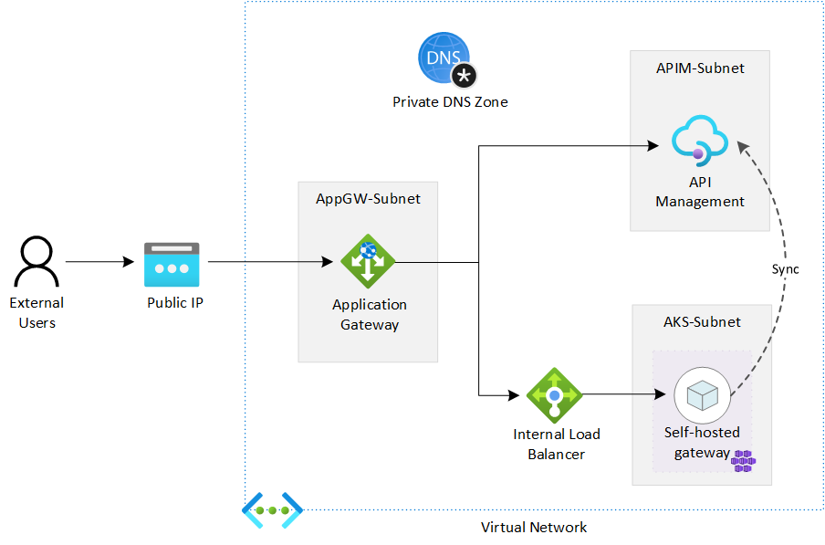

Verify the deployment
In the previous tutorials, you've deployed the following environment in Azure. In this tutorial, we test if the deployment works as expected, and if the requests can be load balanced and handled by both APIM and the self-hosted gateway.

In this tutorial, you learn to:
- ✅ Send requests to API Management through Application Gateway
- ✅ Verify if the requests are distributed to both API Managenet and the self-hosted gateway
Send requests through Application Gateway
-
In the Azure Portal, open Azure Cloud Shell. Choose Bash for the shell.
-
Run the following command with
curl. You can find the subscription key of APIM on its Subscriptions page, and the public IP address of AppGW on its Overview page.curl -I -H "Ocp-Apim-Subscription-Key: [subscription key]" http://[AppGW public IP]/echo/resource -
If everything works, you get
HTTP 200 OKin the response.
Test if the requests are distributed to both APIM and the self-hosted gateway
To test if the requests are handled by either APIM or the self-hosted gateway, you can send HTTP header Ocp-Apim-Trace to enable the trace of APIM. To make the verification even more intuitive, we use a custom policy to retrieve the host from APIM.
-
In the Azure Portal, go to API Management.
-
Click APIs > Echo API > All operations.
-
Click </> on the Inbound processing card to open the policy editor.
-
Replace the code in the policy editor with the code below.
<policies> <inbound> <base /> <set-variable name="inbound-host" value="@(context.Request.Headers.GetValueOrDefault("Host"))" /> </inbound> <backend> <base /> </backend> <outbound> <base /> <set-header name="apim-host" exists-action="override"> <value>@((string)context.Variables["inbound-host"])</value> </set-header> </outbound> <on-error> <base /> </on-error> </policies> -
In the Cloud Shell, run the same
curlcommand as shown in the previous section. Run the command multiple times. You'll notice that theapim-headerin the response could be eitherapim-gw.contoso.net, which is the APIM instance, orapim-shgw.contoso.net, which is the self-hosted gateway. AppGW uses the round robin to distribute the requests to both of them.
You've completed this series of tutorials. Congratulations! 🎉